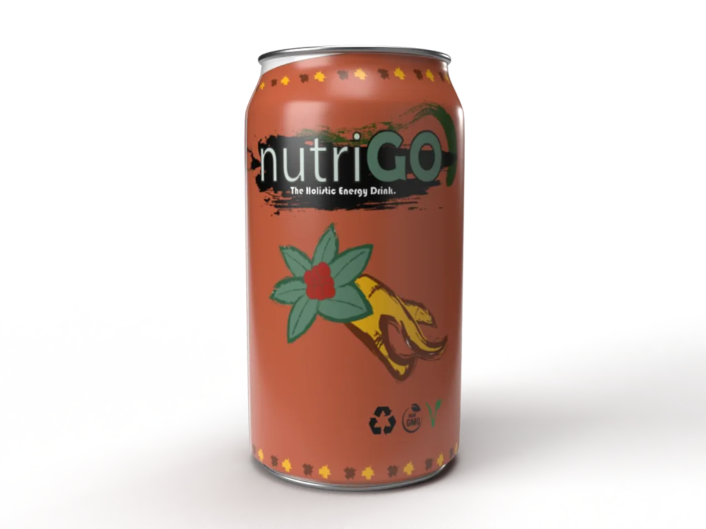
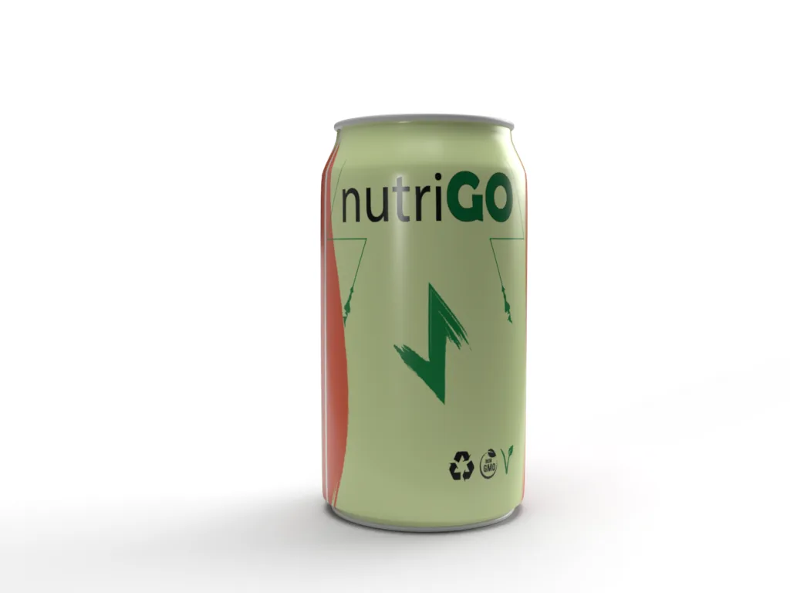
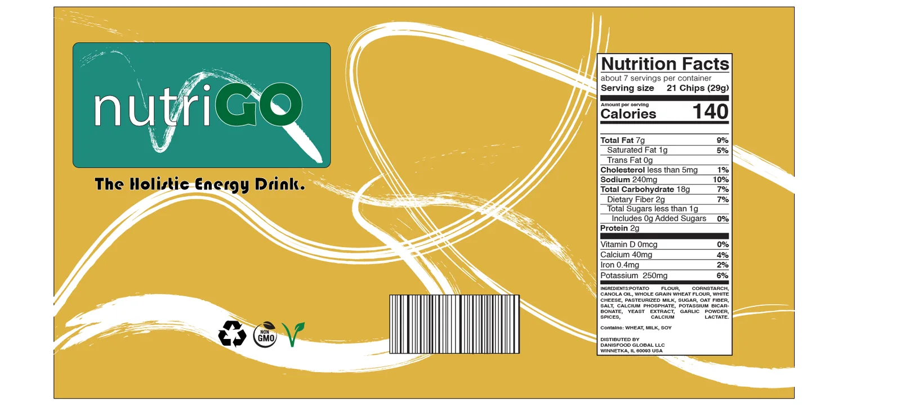

← All work
Brand · Strategy
NutriGO
A conceptual beverage brand created for my classes at CU Boulder’s Leeds School of Business.
Strategy
The plan
A semester-long collaboration with four other students. We built a full marketing plan and presentation covering how the company would be structured, our break-even revenue, and how we would reach scale.

Design
Packaging & renders
I created the mockups, renders and logos while also working heavily on the financials to make sure the product would be viable at launch. We tested the designs with a survey of our target audience and got great feedback.


